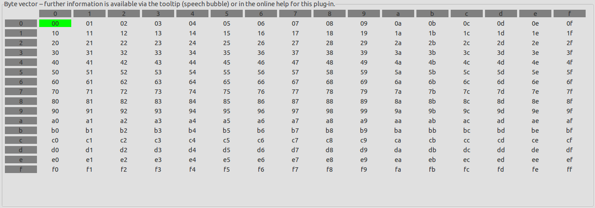
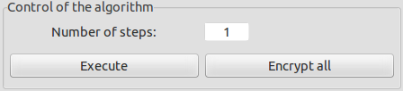
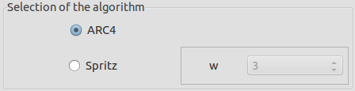
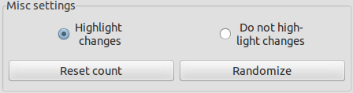
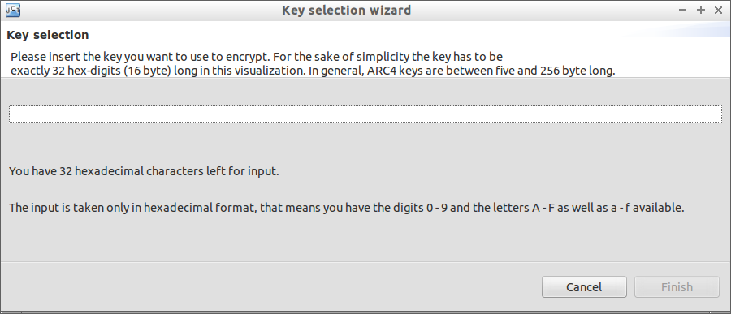

Welcome to the online help of the visualization of the ARC4/Spritz algorithm. This help depicts the following aspects:
Of course, you don't have to read all these chapters to use the plug-in. If you aren't interested in the history of RC4, its algorithm itself or the security aspects, feel free to directly jump to the user instructions.
RC4 and ARC4 respectively are cryptographic stream ciphers. RC4 became well known and widespread mainly because of its usage in standards like HTTPS, SSH1 or WEP/WPA. RC4 has been developed by Ronald L. Rivest in the year 1987 as a trademark of RSA Security Inc., today a subsidiary of EMC Corporation. Therefore, RC4 is not a freely accessible crypto algorithm. Alleged RC4 (ARC4) is based on an anonymous publication of source code (1994). Now it is open-source and freely usable.
Like any stream cipher RC4 generates a (pseudo-)random bitstream which is then used as keystream to encrypt the plaintext through an exclusive disjunction (XOR). The result of this operation is the ciphertext. The basis of this generation in RC4 is a so called s-box. This s-box is a byte-vector with 256 elements initially assigned with the consecutive values from 0 to 255. Afterwards these values will be permutated using the key. After this initialization the algorithm generates the random bitstream using well-defined calculation rules. Every single step of the generation concludes with the swapping of two values inside the s-box. The calculations of the RC4 algorithm uses very simple operations, therefore it is easy to implement the algorithm in hardware and software. The execution of the algorithm itself is pretty fast in comparison to other stream ciphers.
The algorithm looks like the following. First of all the byte-vector (called s-box) will be filled with initial values:
k[] := key (length between 5 and 256 bytes) L := length of the key (in bytes) s[] := byte-vector with 256 bytes For i = 0 to 255 s[i] = i j = 0 For i = 0 to 255 j = (j + s[i] + k[i mod L]) mod 256 swap s[i] and s[j]
The generation of the pseudo-random bitstream and the encryption look like this:
plain[] := plaintext of length X cipher[] := storage for the ciphertext i = 0 j = 0 For n = 0 to X-1 i = (i + 1) mod 256 j = (j + s[i]) mod 256 swap s[i] and s[j] rand = s[ (s[i] + s[j]) mod 256 ] cipher[n] = rand XOR plain[n]
On October 27th, 2014, Ronald Rivest and Jacob Schuldt released an improved version of RC4 under the name "Spritz". Both, RC4 and Spritz, are using a very similar algorithm, but in Spritz a few calculations and rules have been changed a bit. Additionally a new parameter w has been added, which can have any odd value between 1 and 255. More detailed information on Spritz can be found in the references listed below (especially in the article written by Bruce Schneier).
Stream ciphers can only be secure if the random bitstream generated by the algorithm is never the same, and if there is no way to predict the output of the generator with a better success chance than 1/2 (the chance of success when just guessing). To achieve this, it is necessary to keep the key for the algorithm secret and to use the key only once. Like all other stream ciphers it doesn't ensure integrity.
A few weaknesses of the RC4 algorithm (some of them being really serious) where shown in Weaknesses in the Key Scheduling Algorithm of RC4 by Scott Fluhrer, Itsik Mantin, and Adi Shamir in 2002. The weaknesses shown in this paper are mainly based on the derivation of the initial state of RC4 using the key, but they also have consequences for the generation of the bitstream. In the mentioned paper, which is verbalized in a very mathematical way, the authors create an algorithm derived from RC4. Based on this altered RC4 they show that certain patterns in the key are correlating with certain patterns in the internal state of RC4 and as a result the key or parts of it may be calculated with the initial state, where the effort to this is based on the length of the key. Afterwards the authors prove that this weakness is present in the standard RC4 algorithm, too. On top of this, there is a strong correlation of the input key and the output of the random generator, when a key out of a relatively large class of weak keys is used. Because of this it is possible to develop efficient algorithms capable of breaking RC4's security. Such an algorithm created by Shamir and Mantin is able to detect the difference between the generator's output and real random numbers only with the second word of the output. As a result they recommend to ignore the first and the second word and not to use them for encryption. Later they realized that one can calculate parts of the key out of the output although dumping the first 2 words with an effort of 221 (an effort of 280 or more is required today for secure techniques in cryptography).
Another severe weakness works like this: The key K for the algorithm consists of a secret part sec and a so-called initialization vector IV which is known to the public (and so it is to the attacker), and therefore K = sec + IV. Under the precondition that the user uses the secret part of the key not only once, an attacker may be capable to calculate the secret key with the help of the output and the (known) IV with relatively low effort (the effort depends on the length of the key and the IV, of course). In reality it is often possible to guess the first words of the plaintext (for example if the first words are timestamps or the identity of a client in some protocols), which makes a ciphertext-only attack possible. In such an attack the attacker can break the encryption using only the ciphertext. Additionally, Fluhrer, Mantin, and Shamir show the possibility of practically using these weaknesses to attack certain crypto systems and techniques like the old, but wide-spread wireless security standard WEP.
In his paper Attacks on the RC4 stream cipher, published in 2006, Andreas Klein described another attack, which is mainly based on the attack already shown by Fluhrer, Mantin and Shamir (which is also called FMS attack). In this method Klein observed the operations and states of the algorithm in the stage of generating the key and the output of the algorithm. With this procedure Klein was able to calculate a previous state of the algorithm with high efficiency. To make things worse he also exposed the fact that his new attack works with the first 256 bytes discarded, too. This is why he recommends users to dump the outputs of at least the first 12 rounds of the algorithm in order to make an attack impossible or at least very hard (where one round equals 256 bytes of output).
In March 2013, AlFardan, Bernstein, Paterson, Poettering, and Schuldt described one of the latest attack scenarios on RC4. In this scenario an attacker can read a few messages encrypted with RC4 and then sent over TLS connections. Here it is necessary that the same plaintext is encrypted and sent over more than just one connection. The authors use statistical biases in the key generation of RC4 which allows differentiating between the created output and really random bits. These results enable an attacker to break the security of RC4. They recommend not to use RC4 anymore and to use secure cipher suites instead (like the fast and secure AES in GCM mode).
The German website golem.de (which is a webpage for news in the field of information technology) published an article on January 20th, 2015. According to this article two groups of scientists announced the publication of some new attacks on ARC4 in the near future. The whole article can be read here (in German).
Reports about these new attacks can be found in heise from March 27th, 2015, and in Golem from March 26th, 2015.
To sum things up, all relevant organizations and authorities like the European Network and Information Security Agency (ENISA) or the German Federal Office for Information Security (in German: Bundesamt für Sicherheit in der Informationstechnik (BSI)) recommend not to use RC4 any longer. Instead, one should use secure standards like the stream ciphers Rabbit or Snow 3G, or the block cipher Advanced Encryption Standard (AES), which is probably the most popular encryption standard today. The IETF decided with its publication of RFC 7465 in February 2015 that using RC4 in TLS is prohibited.
Start the visualization by clicking on ARC4 / Spritz in the submenu Visuals. As a result a new window opens up. At the top you can see a descriptive text about the visualization and instructions for its usage. Similar instructions are shown in tooltips when hovering over an element (for example a button) with your cursor.
Below this text there is a matrix with 2 dimensions named byte vector. This is the representation of the s-box with all the values stored in it. The vector is filled with numbers from 0 to 255 in hexadecimal notation directly after opening up the window.

On the right hand side you can see a group box with a headline reading Variables. The values of the internal variables i and j are displayed, as well as a counter for already finished steps. At the beginning all of these values will be 0. All values are displayed in decimal and hexadecimal notation.
Under the variables there is another group box called Control of the algorithm. With the elements here you can control the procedure of the algorithm. In the text field Number of steps you can write a positive value which represents the number of steps you want the algorithm to process at once. When clicking on Execute the algorithm will execute the entered number of steps. When clicking on Encrypt all the algorithm will finish the encryption completely. Please note that the algorithm in this visualization has exactly 256 + the amount of bytes in the plaintext steps. 256 of them are required for the initial permutation of the s-box with the key. The rest (amount of the bytes in the plaintext) are required for generating random bytes and to exclusively XORing them with the plaintext bytes.

In the next group box (Selection of algorithm) you can choose the algorithm you want to see. ARC4 (as default) and the modern version Spritz are available. If choosing Spritz an additional parameter is required (called w). You can set this parameter with the drop-down box (this box will become active when choosing Spritz). Valid values for w are all odd numbers between 1 and 255 (numbers 1 and 255 inclusive). The selection of the algorithm can only be changed before starting the visualization.

Below this group box there is another one called Misc settings. Here you can make the plug-in to highlight the last changes in the s-box by clicking Highlight changes. By choosing Do not highlight changes you can disable this feature. With a click on Reset count the step counter will be set to 0 again, which means all changes will be undone (plaintext and key will remain the same). With the button Randomize the key and the plaintext will be randomly generated. This function is available only before starting the algorithm, of course.

Under the s-box at the bottom of the window there are 4 vectors representing the plaintext, the key, the randomly generated bytes, and the ciphertext. In this visualization all of them can be from one to 16 bytes long. Note that the key and plaintext do not need to have the same length. For all four vectors there is a button Copy to clipboard to copy the value of the corresponding vector to the clipboard of your system in order to reuse the values in another application. The key and the plaintext are prefilled with randomly chosen values at the beginning. Of course, you can change these values for these two vectors by clicking the Choose button next to the corresponding vector.

In both cases a wizard will open up. In this wizard you can enter the key (or the plaintext) in hexadecimal notation. There are one to 16 bytes available for your input (which means you can enter at max 32 hex symbols). Wrong inputs, like symbols that are no hexadecimal numbers, will be ignored and an according message will be displayed directly beneath the input field. You can close the wizard at any time by simply clicking on Cancel. In this case your input will be dumped and the old value of the key or plaintext will not be changed. After entering an even amount of hex digits you can click on the button Finish to accept the input and the plaintext/key will be changed accordingly. Please note that the key and the plaintext can only be changed if you did not already start the algorithm with a click on Execute (so the value of Step is still 0).

Remark: In the ARC4 visualization plug-in the key has to have a length of exactly 16 bytes. In the ARC4 crypto plug-in the keylength can vary between 5 and 256 bytes (according to the spec of the algorithm).
When Step in the group box variables shows the value 256 + amount of plaintext bytes, the algorithm has finished and the complete ciphertext can be seen at the bottom of the window. When clicking then on either Execute or Encrypt all again, a message will appear informing you about this fact. If you want to start the visualization once again, you can click on the small button at the top left of the window (the tooltip reads Restart when hovering over the button with the cursor of your mouse). It is located at the top if the window, left of the buttons Minimize and Restore.

Remark: Within the ARC4 crypto plug-in you can encrypt plaintexts or decrypt ciphertexts of arbitrary length (stored in a file or in the JCT editor). In contrast, the ARC4 visualization plug-in has an input length of one to 16 bytes (as its purpose is the visualization not the encryption of mass data).
First, an example plaintext has to be chosen. The visualization limits the length of the plaintext to exactly 16 bytes, therefore we only use 16 bytes for our plaintext:
AA BB CC DD EE FF 00 11 22 33 44 55 66 77 88 99
In the visualization this can be achieved by simply opening the plug-in and then clicking the Choose button for plaintext. In the wizard simply enter the text above. Afterwards simply click on Finish.
In the crypto plug-in you have to open up an empty file first. To do this, simply click on File->New->Empty File in Hexeditor.
In the empty file click with the right button of your mouse and then choose Append in the context menu. For the value Amount of data to append you may enter a value of 16. The unit is B (for Byte). Afterwards click on OK. A new line should appear inside the file. Now you can enter the plaintext by clicking on each cell of the line and then entering two hex values with the keyboard.
In addition to the plaintext a key is needed for encryption. In this example we will use:
00 11 22 33 44 55 66 77 88 99 AA BB CC DD EE FF
In the visualization you can enter this key by clicking on the appropriate Choose button next to the key vector and then typing the key in the wizard.
In the crypto plug-in just enter the key into the text field of the entry dialog or copy it from the clipboard via the context menu.
To encrypt the text you may click on Encrypt all in the visualization (or you may watch the process step by step). In the crypto plug-in make sure you chose the options Encrypt and ARC4 and then click Finish.
In the visualization the result is displayed at the bottom in the vector for the ciphertext. When using the crypto plug-in a new hex editor window will be opened with the ciphertext. The resulting text in both cases should look like this:
2F E0 60 8A 7C D8 61 94 DA 6A FD 6E F3 32 F5 0D

Further information on cryptography and (A)RC4 are available here:
Online help created March 29th, 2015. Update 2020.
Visualization plug-in about ARC4/Spritz created till March 2015 within a project of the FH-Hagenberg.